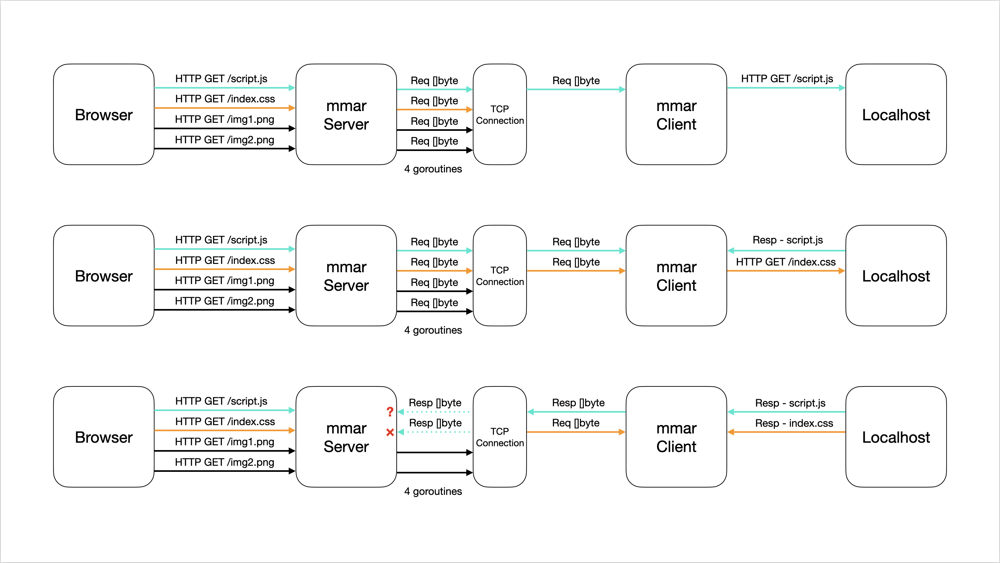
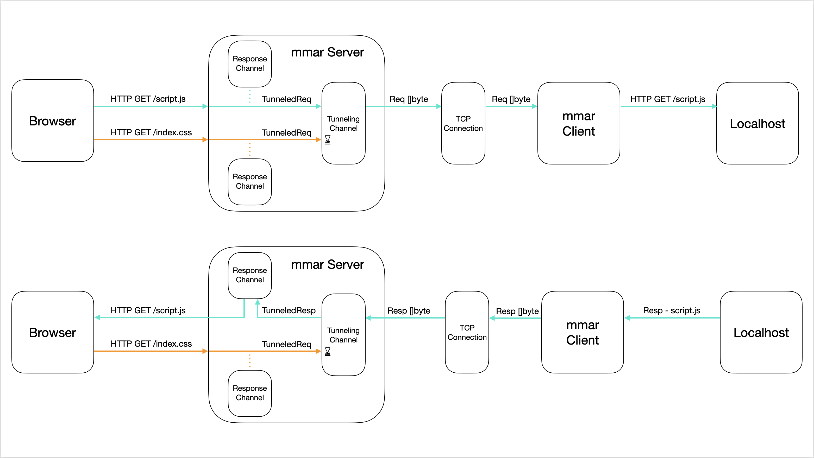

mmar - Devlog 1
This is the first of hopefully many devlogs documenting the process of building my new project mmar.
Introduction & Motivation
mmar is a self-hostable, cross-platform tunnel that exposes your localhost to the world on a public URL.
We’ve all been there, you’re working on a project on your machine, you want to share it with someone to get quick feedback or maybe you’d like to interact with it from some external system, but you don’t want to go through the effort of fully deploying your project and dealing with infrastructure. This is especially true, if the project is not “ready” for deployment yet. Wouldn’t it be great to run a command and get a public URL that you can share with anyone and have them interact directly with what is running on your localhost?
There are a number of services out there that do just that. So mmar is not exactly something new in that sense. So why build another one™️? What I’m hoping to achieve with mmar is to give the developer a great experience across the board:
- Want to install and just run with the defaults? Run the
mmarcommand - Developing on a windows machine? No problem
- Want to see what’s happening under the hood? It’s open source
- Worried about privacy of your data? Self-host it easily
Current Status
mmar is still in it’s very early stages, not ready for launch just yet. I’m hoping to document the journey of developing it. Sharing technical details or interesting bugs encountered along the way. I’ll try to keep these devlogs concise to get into the habit of writing more of them. :D
I’m building it in Go as a CLI, and hoping to do so without any dependancies and plan to keep it that way. So far, Go’s Standard Library has been a beast!
Race Conditions
The Bug
While building out the initial components of mmar, I ran into an interesting bug. To set the scene, I have the following running on my machine:
- a simple python server running locally serving a static html page (this blog):
localhost:8080 - a
mmar serverrunning locally listening to HTTP requests on3376and TCP requests on6673 - a
mmar clientrunning locally that creates a TCP connection to themmar server, creating the “tunnel” - a browser accessing the static html page through
mmartunnel atlocalhost:3376(this is the “public” URL in this case)
The flow looks like so:
Browser <— HTTP —> mmar server <— TCP —> mmar client <— HTTP —> local python server
However, upon accessing the page through the tunnel, it kinda worked, and sometimes it broke or acted in unexpected ways. When the webpage loads, some requests for other static files would load, others would either hang or fail due to a malformed response, each time with a different error message:
2024/10/02 13:48:24 Failed to return response: malformed HTTP response "v\xe9Y"
...
2024/10/02 13:49:37 Failed to return response: malformed HTTP response "olutionUnit>"
...
2024/10/02 13:48:24 Failed to return response: malformed HTTP status code "\x02\"Pm\x04\xa8\x8f\xf8700`\xf7\xde{\xaf\x1b\xd3h\x88\x9c\x9e\x9e\xb6S\xa7N9\x979\x1a\x1b\xf8=\xc74\x8an\x1a\x1c8\xa6\xe9:\xbaКr/Y`\xe1B\xdd\xd0\xff\x88\x1d\x8a\x93\x018a\x92\x9d\x8c3u9!\x8a\x85\x17ӑ\x91\x91\xf9\tQ\x14\xe1"
...
These were clear signs that there was something fishy going on and had the smell of a race condition all over it.
I fired up delve to step through the code and try to see what was going on. It turns out that since each HTTP request coming in is handled in a separate goroutine concurrently, and I only have 1 TCP connection that they all read from and write to at the same time, a request from a goroutine would read bytes that belonged to a response for another request’s goroutine.
What does that mean? Well here’s a simple diagram to explain what is going on:

Notice how as the first request is sent through the TCP connection, processed and awaiting a response, the second request comes in, starts getting processed and awaits a response. The response bytes for script.js are sent back to the TCP connection, meanwhile the request for index.css is still being processed.
At this point, both request goroutines are waiting (reading) from the same TCP connection for the response bytes to be sent over. It just so happens that the size of the response for script.js is larger than the buffer size, hence requiring multiple reads. The first read is correctly done by the script.js request goroutine, but a following read is done by the index.css request goroutine, as we see in the 3 row in the diagram. Since that read is in the “middle” of the response bytes data, the goroutine doesn’t know how to process it, resulting in a malformed HTTP response.
The Solution
To resolve this, we need a way to only allow a single request to:
- Be sent through the TCP connection
- Get processed
- Have it’s response written back to the TCP connection
- Response is read by the goroutine that sent it
- All while no other goroutines interacting with the TCP connection until all the above is completed
So, how can we achieve this?
Channel your problems away
Go makes it really easy to send data between different goroutines, essentially allowing communication between them. This is done through a built in mechanism called Channels. What’s also cool about them, is that when you write to a channel, it blocks until that data is read from that channel, and likewise, reading from a channel blocks until something is read.
Given these properties, I restructured the code incorporating channels. Rather than each goroutine directly interacting with the TCP connection, instead, when the initial TCP connection is established between the mmar client and the mmar server, I create a channel and fire a new goroutine that is constantly listening to messages sent on that channel. Let’s call this the Tunneling Channel. In addition to that, I create a new channel each time a new request comes in. These channels are responsible for waiting/reading responses corresponding to their requests, we’ll call these the Response Channels.
With all that in place, I think it would be easier to visualize on a diagram, and you can compare it to the previous one (I left in only 2 requests for readability):

Notice now how when requests come in, they each create a Response channel, then the request gets serialized into a TunneledRequest and written to the Tunneling channel. In the new separate goroutine, it is constantly waiting for data sent on that channel to read them. Once it reads a TunneledRequest, the remaining wait in the channel until that read request is fully processed. When the response is received from the TCP connection, it is then sent back to the response channel created by that request as a TunneledResponse. Then the following TunneledRequest is read from the channel and processed. That way preventing any request goroutines from reading response data when they shouldn’t.
Show me some code
The code for this is quite straightforward and easy to follow. I’ll share just the relevant parts to the solution. First we’ll go through the different structs:
type Tunnel struct {
id string
conn net.Conn
channel chan TunneledRequest
}
type TunneledRequest struct {
responseChannel chan TunneledResponse
responseWriter http.ResponseWriter
request *http.Request
}
type TunneledResponse struct {
statusCode int
body []byte
}
The Tunnel represents a tunnel connection between a mmar client and the mmar server. The server stores the TCP connection and a channel that expects data of type TunneledRequest.
A TunneledRequest contains the request itself, a response writer to populate the response headers, and a response channel to send the remaining response data to as a TunneledResponse.
A TunneledResponse contains the actual response body bytes as well as the status code.
The code that handles HTTP requests when coming looks like so:
func (t *Tunnel) ServeHTTP(w http.ResponseWriter, r *http.Request) {
log.Printf("%s - %s%s", r.Method, html.EscapeString(r.URL.Path), r.URL.RawQuery)
// Create response channel for tunneled request
respChannel := make(chan TunneledResponse)
// Tunnel the request
t.channel <- TunneledRequest{
responseChannel: respChannel,
responseWriter: w,
request: r,
}
// Await response for tunneled request
resp, _ := <-respChannel
// Write response headers with response status code to original client
w.WriteHeader(resp.statusCode)
// Write the response body to original client
w.Write(resp.body)
}
This is called in a separate goroutine every time a new request is received.
Now for the code that processes these tunneled requests, the following is fired in a new goroutine once the mmar client connects to the mmar server and the tunnel channel is created and associated with Tunnel instance:
func (t *Tunnel) processTunneledRequests() {
for {
// Read requests coming in tunnel channel
msg, _ := <-t.channel
// Writing request to buffer to forward it
var requestBuff bytes.Buffer
msg.request.Write(&requestBuff)
// Forward the request to mmar client
if _, err := t.conn.Write(requestBuff.Bytes()); err != nil {
log.Fatal(err)
}
// Read response for forwarded request
respReader := bufio.NewReader(t.conn)
resp, respErr := http.ReadResponse(respReader, msg.request)
if respErr != nil {
failedReq := fmt.Sprintf("%s - %s%s", msg.request.Method, html.EscapeString(msg.request.URL.Path), msg.request.URL.RawQuery)
log.Fatalf("Failed to return response: %v\n\n for req: %v", respErr, failedReq)
}
defer resp.Body.Close()
respBody, respBodyErr := io.ReadAll(resp.Body)
if respBodyErr != nil {
log.Fatalf("Failed to parse response body: %v\n\n", respBodyErr)
os.Exit(1)
}
// Set headers for response
for hKey, hVal := range resp.Header {
msg.responseWriter.Header().Set(hKey, hVal[0])
// Add remaining values for header if more than than one exists
for i := 1; i < len(hVal); i++ {
msg.responseWriter.Header().Add(hKey, hVal[i])
}
}
// Send response back to goroutine handling the request
msg.responseChannel <- TunneledResponse{statusCode: resp.StatusCode, body: respBody}
}
}
Since we don’t want to block other requests while doing work after the response is received back from the tunnel, we just read the response headers and body from the buffer and then send it back to the response channel to handle assembling the full response to be sent back to the original client (browser) using the response writer.
It’s important to note that we need to read the response headers and body from the buffer before allowing other requests to be processed. This is because if we don’t, we face the same issue we had before, as the response data stays in the buffer until it is read, therefore another request could (partially) read the response and we end up with the same race condition.
That’s it!
Thanks for reading! Hopefully you found it as interesting as I did, and stick around for the rest of the journey building mmar.
PS: The name mmar is prounounced “ma-mar” which means “corridor” or “passthrough” in Arabic.